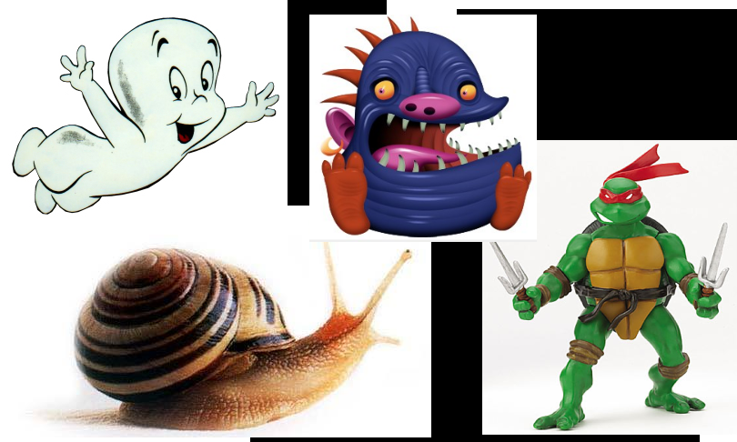

About me
- Software Developer @ Valtech Sthlm
- Polyglot programmer
- Old school agile loudmouth
- Father of two, husband of one
History

Now
Projects Using Git


$ cat ~/.gitconfig
[user]
name = Marcus Ahnve
email = marcus@ahnve.com
[color]
diff = auto
status = auto
branch = auto
ui = true
[apply]
whitespace = nowarn
[alias]
ci = commit -a
co = checkout
st = status
br = branch
[github]
user = mahnve
token = <secret>
[merge]
tool = vimdiff3
[mergetool "gvimdiff3"]
cmd = gvim -f -d -c \"wincmd J\" \"$MERGED\" \"$LOCAL\" \"$BASE\" \"$REMOTE\"
[mergetool "vimdiff3"]
cmd = vim -f -d -c \"wincmd J\" \"$MERGED\" \"$LOCAL\" \"$BASE\" \"$REMOTE\"
[core]
autocrlf = input
safecrlf = true
$ git config --global -l
user.name=Marcus Ahnve
user.email=marcus@ahnve.com
color.diff=auto
color.status=auto
color.branch=auto
color.ui=true
apply.whitespace=nowarn
alias.ci=commit -a
alias.co=checkout
alias.st=status
alias.br=branch
github.user=mahnve
github.token=<secret>
merge.tool=vimdiff3
mergetool.gvimdiff3.cmd=gvim -f -d -c "wincmd J" "$MERGED" "$LOCAL" "$BASE" "$REMOTE"
mergetool.vimdiff3.cmd=vim -f -d -c "wincmd J" "$MERGED" "$LOCAL" "$BASE" "$REMOTE"
core.autocrlf=input
core.safecrlf=true
$ git config --global --add user.name 'Marcus Ahnve'
$ git init
Initialized empty Git repository in /home/mahnve/src/test/.git/
$ touch tmp.txt
$ git status
# On branch master
#
# Initial commit
#
# Untracked files:
# (use "git add <file>..." to include in what will be committed)
#
# tmp.txt
$ git add .
$ git status
# On branch master
#
# Initial commit
#
# Changes to be committed:
# (use "git rm --cached <file>..." to unstage)
#
# new file: tmp.txt
#
$ git commit -m 'initial commit' ──master(Tue,Mar08)─┘
[master (root-commit) 21a58a0] initial commit
0 files changed, 0 insertions(+), 0 deletions(-)
create mode 100644 tmp.txt
$ git log ──master(Tue,Mar08)─┘
commit 21a58a0d71b1e2b2da47999a43b2bffacfc354af
Author: Marcus Ahnve <marcus@ahnve.com>
Date: Tue Mar 8 22:59:42 2011 +0100
$ echo foo > tmp.txt
$ git status